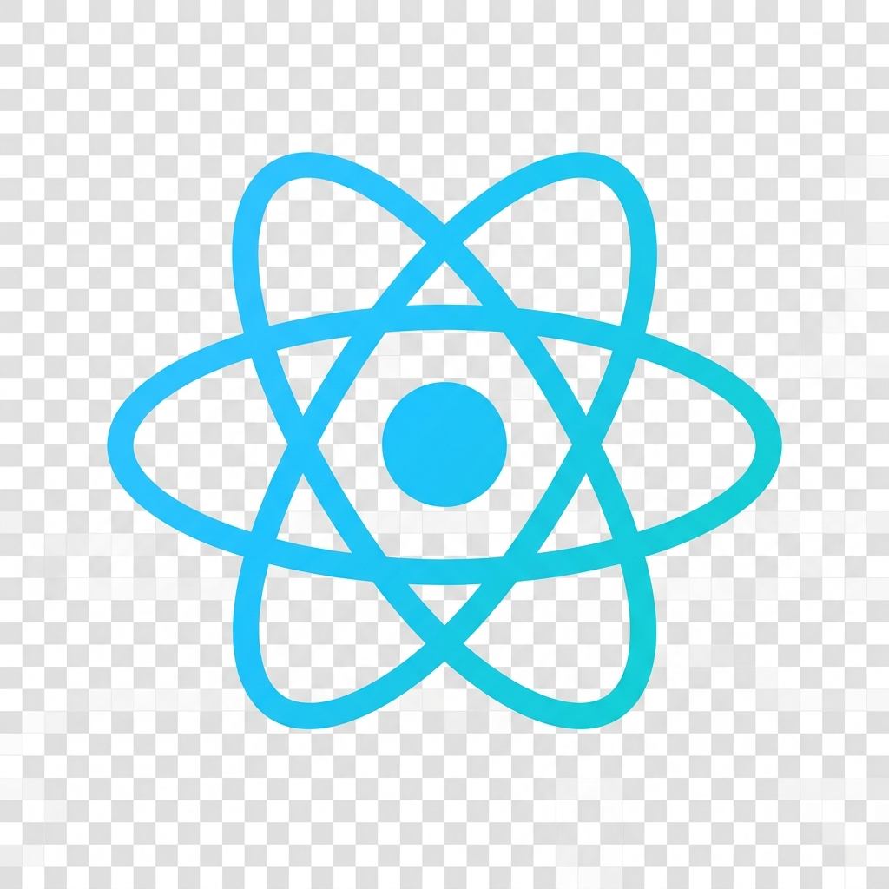
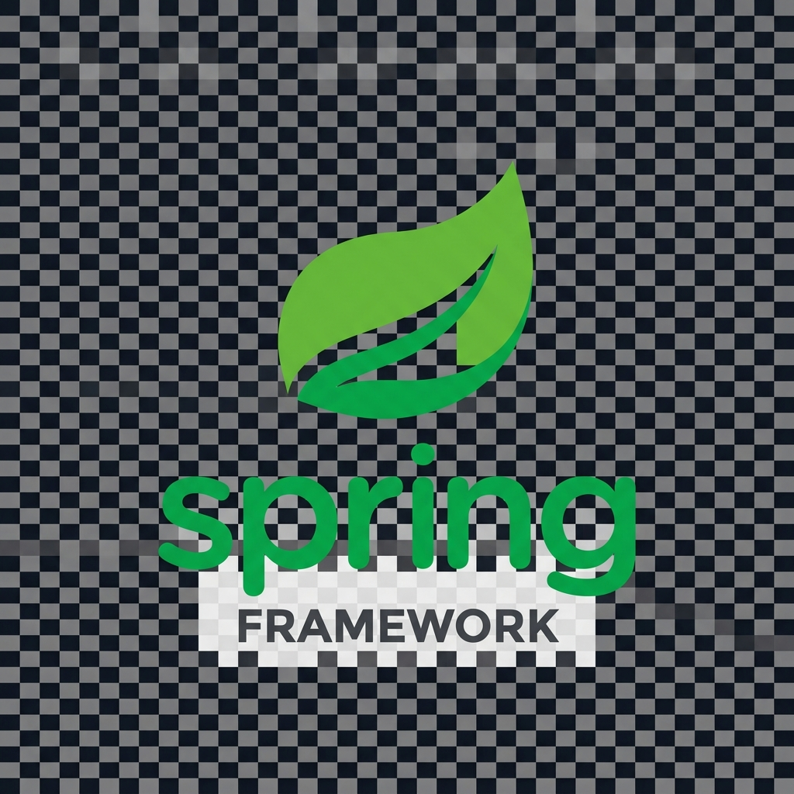
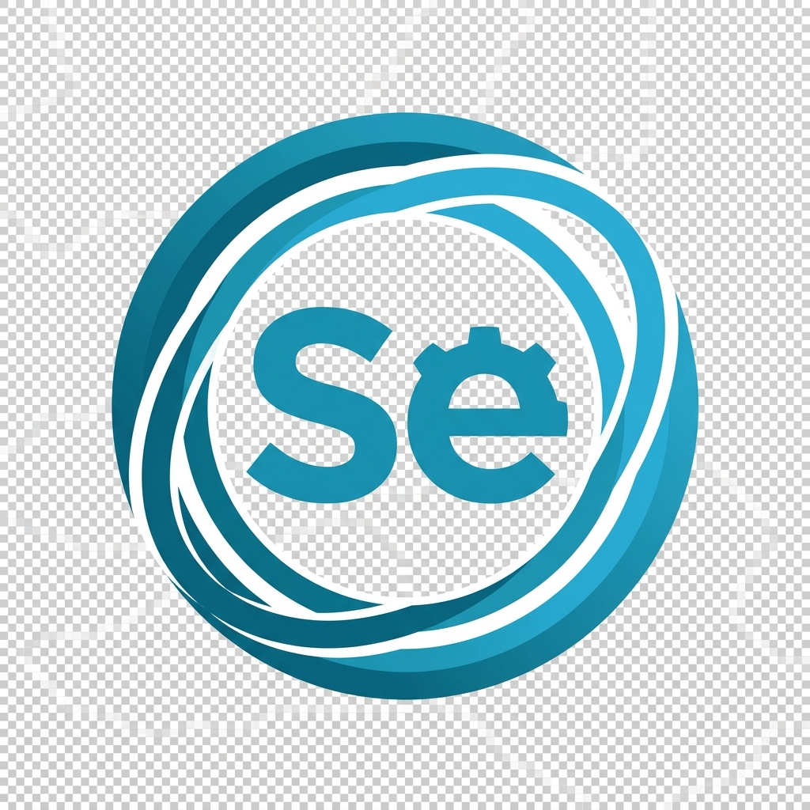
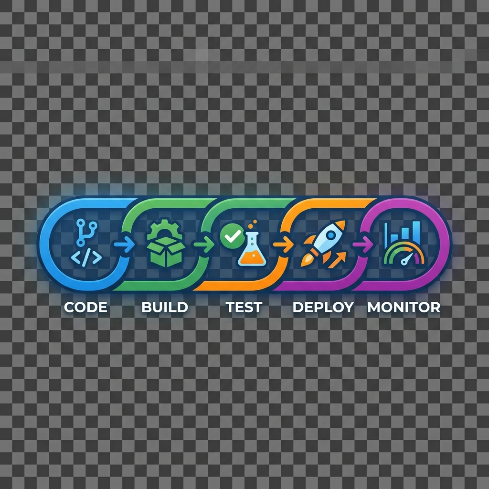

Hi, I am
Ronit Kr Roy
Freelance Full-Stack, QA Automation & Cloud Expert
Delivering enterprise-scale frontend applications, robust backend architectures, comprehensive QA automation, and scalable cloud solutions.
Why Work With Me?
I am an independent Software Engineer in Test (SDET) specializing in building resilient, scalable automation frameworks from the ground up. I partner with clients to solve complex validation challenges, accelerate release velocity, and guarantee product reliability.
Whether you need API validation, UI automation, or comprehensive CI/CD pipeline integration, I bring an automation-first mindset to ensure your software is tested rigorously and intelligently.
Featured Client Projects
AI-Driven Endpoint Security Platform
Python | C++ | AWS | PyTestThe Challenge
Required a robust way to validate an AI-driven endpoint agent, covering silent installations, network security protocols, and multi-vendor interoperability testing across OS environments.
The Solution & Impact
- Architected end-to-end automation tailored for Windows/macOS endpoints.
- Conducted strict interoperability testing ensuring zero conflicts with existing network software.
- Achieved 100% automated regression coverage, reducing release cycles by 40%.
Cloud-Native Vendor Management System (VMS)
Node.js | Azure | Postman | MongoDBThe Challenge
The client needed a highly available backend for their VMS with comprehensive QA coverage to ensure secure B2B data exchanges and seamless API integrations.
The Solution & Impact
- Developed scalable RESTful APIs using Node.js and Express deployed on Microsoft Azure.
- Created an extensive Postman automation suite for backend endpoint testing.
- Implemented SQL/NoSQL data integrity checks, ensuring zero data loss during high-volume vendor transactions.
Enterprise Employee Management & HRMS
React | Spring Boot | Selenium | Manual QAThe Challenge
A comprehensive HRMS requiring full-stack development, strict RBAC validation, payroll logic, and manual QA testing.
The Solution & Impact
- Built dynamic UI with React and robust backend services using Spring Boot.
- Implemented manual exploratory testing complemented by Selenium automation.
- Integrated CI/CD pipelines (GitHub Actions) to run automated UI tests on every push.
- Delivered a zero-defect payroll module and automated regression suite.




AI-Powered Customer Relationship Management (CRM)
Next.js | TypeScript | Tailwind | PlaywrightThe Challenge
The client demanded a blazing-fast, SEO-optimized CRM frontend using modern web standards, coupled with rigorous end-to-end testing.
The Solution & Impact
- Developed the application utilizing Next.js (React) for Server-Side Rendering (SSR) and TailwindCSS for responsive design.
- Integrated Playwright for rapid, parallelized cross-browser E2E testing.
- Improved page load speeds by 60% and secured high reliability across all supported browsers.
High-Scale Networking & Infrastructure Hub
FastAPI | Docker | Kubernetes | AppiumThe Challenge
Needed to orchestrate testing across mobile devices and complex network infrastructures, ensuring uptime and fault tolerance for networking appliances.
The Solution & Impact
- Deployed microservices architecture with Python FastAPI, Docker, and Kubernetes.
- Executed robust endpoint/load testing using JMeter and automated mobile client testing with Appium.
- Scaled the infrastructure to seamlessly handle 10,000+ concurrent network requests.
Global B2B E-Commerce & Logistics Portal
Vue.js | Django | SQL | TestNGThe Challenge
Required a unified dashboard to manage global supply chains, needing both frontend UI enhancements and reliable end-to-end order processing automation.
The Solution & Impact
- Engineered real-time tracking dashboards using Vue.js and a Django-based backend.
- Established comprehensive TestNG automation suites for critical payment and logistical pathways.
- Eliminated manual regression bottlenecks, saving 30+ hours per release cycle.
Core Expertise
Frontend Development
React, Next.js, HTML5, Modern CSS, JavaScript/TypeScript, UI/UX Implementation
Backend Architecture
Node.js, Python, Java, RESTful APIs, Microservices, SQL & NoSQL Databases
QA Automation
Selenium WebDriver, Playwright, TestNG, Appium, API Validation (Postman)
Cloud Services
AWS, Azure, Docker, Kubernetes, Jenkins CI/CD, Git Integration
Credentials
Let's Discuss Your Project
Ready to build or scale your next application? Fill out the form below with your project requirements, and I'll get back to you within 24 hours.